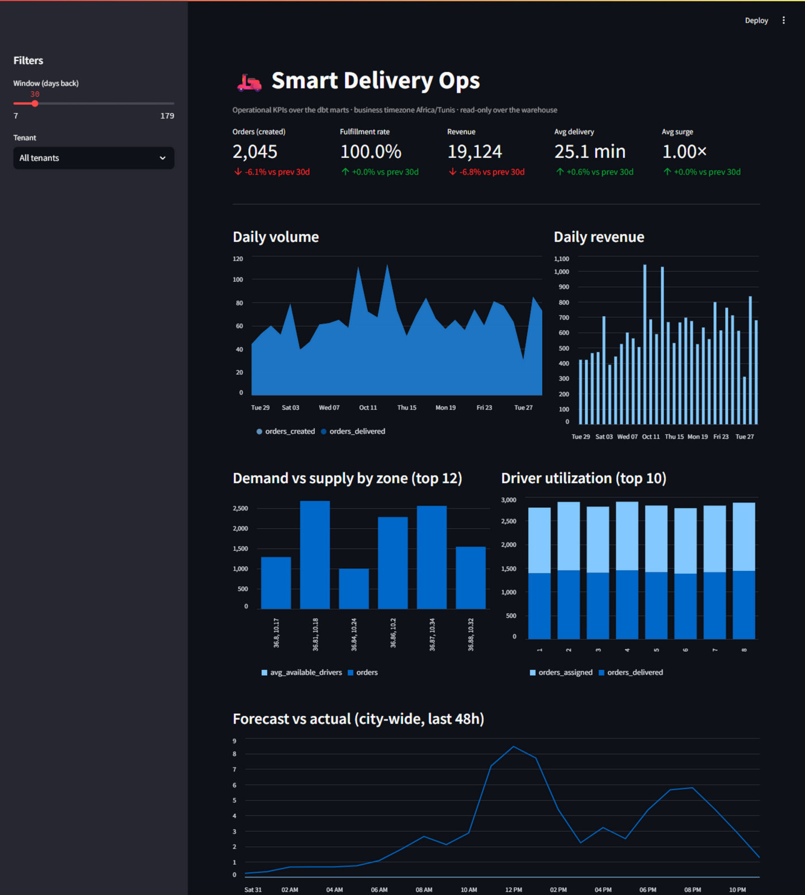

One system for the whole ride: orders, driver dispatch, dynamic pricing and demand forecasts — plus an AI copilot that answers your questions in plain language. You run the business; the platform runs the operation.

Every order and every driver move is recorded once — which is why the dashboard, the prices and the forecasts can never disagree with each other.
One place for the full journey — placed, assigned, on the way, delivered — with a history you can always answer "who changed this, and when" from.
Real road distances and live availability: you see which drivers are actually free right now, and drivers free up automatically on delivery.
Fees that follow real distance and real demand — every quote comes with its full breakdown. Arrival promises come from a model trained on real deliveries, with a safe fallback so quoting never stops.
Demand forecasts per zone that retrain when they get stale, a live dashboard, and an AI copilot that answers your questions and explains incidents when something breaks.
Everything below is built, running, and inspectable — each card links to the working evidence, not a brochure.
For the operator who needs one dependable system instead of five tools.
For the operator who wants the platform to see the rush before it arrives.
For the operator who wants to ask, not dig.
No mystery subscriptions. We start with a fixed-scope pilot: we connect your order intake, set up dispatch and pricing for your zones, and go live with you. You leave the first call with a fixed pilot price in writing within 48 hours — no hourly billing, no surprises. After the pilot, it's a monthly subscription sized to your order volume and fleet.
No. It runs on infrastructure I set up and manage for you. You get a web dashboard and an API — nothing to install at your end.
You do. Every order, driver record and price change is yours and exportable any day. If we part ways, you walk away with your complete history.
Yes — that's exactly what the pilot's first week is for. Whatever your intake looks like today (phone, WhatsApp, a spreadsheet), we connect it so the platform becomes your single record from day one.
You keep the subscription and the system keeps running — or you walk away with your data. The pilot's job is that the decision makes itself.
The engineer who built it — the same person on the intro call is the one on call when something needs attention. Every part of the platform is monitored around the clock, and when something breaks, the alert already explains what happened.
Email me about your delivery operation — I'll reply within one business day with a time for a 15-minute call. On that call I'll run a real order through the platform, live, and tell you straight whether it fits your operation. You leave with a fixed pilot price in writing within 48 hours.
Prefer plain email? siwar.attia6191@gmail.com — one engineer, reachable directly, every message answered.